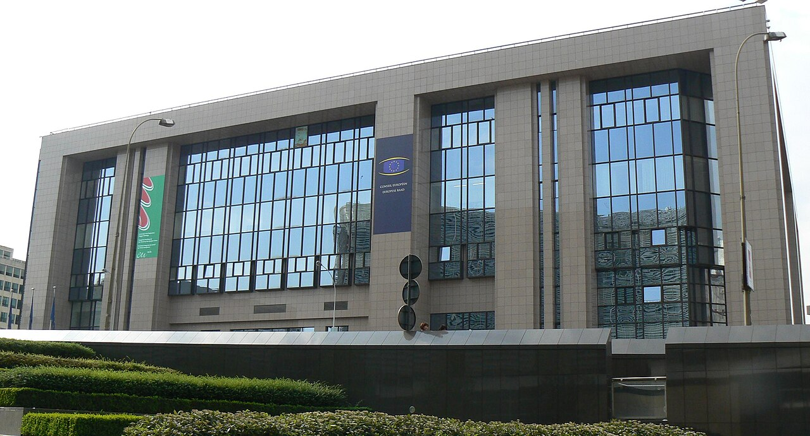

Cimeira europeia acaba sem acordo sobre o orçamento até 2034, ao fim de quase 15 horas; espanhol Hernández de Cos é o escolhido para o BCE

Imagem de arquivo
Os 27 líderes da União Europeia (UE) não chegaram a acordo sobre o orçamento de longo prazo para 2028–2034. A cimeira extraordinária em Bruxelas terminou já de madrugada, nesta sexta-feira, 27 de novembro, depois de quase 15 horas de discussão, segundo o Jornal de Negócios e o EUalive. O segundo dia, previsto para hoje, foi cancelado. «Não chegámos a um acordo relativamente ao montante global do orçamento», admitiu o presidente do Conselho Europeu, António Costa, que chamou à reunião «uma etapa necessária do processo» e aponta agora para a cimeira de meados de dezembro.
Em cima da mesa estava a proposta de compromisso de Costa: cerca de 1,78 biliões de euros, abaixo dos quase 1,98 biliões propostos pela Comissão Europeia. Para uns é demais, para outros é de menos. Sete países que pagam mais do que recebem, entre eles Alemanha, Países Baixos e Suécia, querem cortes maiores e recusaram participar nas reuniões em pequenos grupos que Costa organizou, segundo a Euronews. O chanceler alemão, Friedrich Merz, disse que será preciso cortar ainda mais. Do outro lado, o Presidente francês, Emmanuel Macron, chamou aos cortes um «erro estratégico» e avisou que, sem acordo até 31 de dezembro, as negociações não poderão ser reabertas. A italiana Giorgia Meloni disse que um acordo está a «anos-luz».
E Portugal? Luís Montenegro disse que a proposta de Costa «ainda não é suficiente» e que Portugal não a apoia sem garantias para os fundos de coesão, destinados às regiões mais pobres, e para os Açores e a Madeira, segundo o Observador. A proposta dá a Portugal 34,9 mil milhões de euros, cerca de 400 milhões menos do que versões anteriores. O empréstimo de 45 mil milhões à Ucrânia para 2027 ficou em segundo plano: a Bulgária conseguiu ficar fora da parte militar e Hungria, Eslováquia e República Checa continuam a recusar participar, segundo o EUalive.
Houve uma decisão: os líderes dos países do euro apoiaram o espanhol Pablo Hernández de Cos, antigo governador do Banco de Espanha, para suceder a Christine Lagarde na presidência do Banco Central Europeu (BCE), segundo a Lusa e a Euronews. Lagarde sai a 7 de fevereiro de 2027. A francesa Laurence Boone e o alemão Markus Brunnermeier foram indicados para outros lugares na direção do banco. A nomeação ainda tem de ser formalizada, o que deverá acontecer em dezembro.
Fontes e verificação · 2 fontes independentes
Fontes: Jornal de Negócios – «Reunião sobre Orçamento da UE termina sem acordo mas Costa espera aval em dezembro» (27 nov.), EUalive – «EU leaders end marathon summit without budget deal, pushing crunch talks to December» (27 nov.), Euronews – «'A lot of political theatre': EU summit ends in disarray as leaders cling to red lines» (27 nov.), Observador (Lusa) – «Montenegro. Proposta de Costa para orçamento comunitário "ainda não é suficiente"» (26 nov.), Correio da Manhã (Lusa) – «Líderes da União Europeia escolhem espanhol De Cos para suceder a Lagarde no BCE» (26 nov.), Euronews – «Eurozone leaders back Hernández de Cos to succeed Lagarde at ECB» (26 nov., citado)
Confirmado por duas fontes independentes. Fim da cimeira sem acordo, as quase 15 horas, as declarações de Costa e a cimeira de meados de dezembro confirmadas no Jornal de Negócios (27 nov.) e no EUalive (27 nov.). Boicote dos sete «frugais», declarações de Merz, Macron e Meloni na Euronews e no EUalive. Montenegro e a verba para Portugal vêm do Observador (Lusa, 26 nov.). Posição da Bulgária e dos três países que recusam o empréstimo à Ucrânia só no EUalive. Escolha de Hernández de Cos, Boone e Brunnermeier na Lusa (via Correio da Manhã) e no EUalive; o título da Euronews sobre o tema surgiu nos resultados de pesquisa, mas a página não foi aberta. A data exata da cimeira de dezembro não foi confirmada hoje (fontes anteriores indicavam 17–18 dez.). Imagem: o ficheiro surge nos resultados de pesquisa do Commons, mas a página não pôde ser aberta; o que mostra resulta do nome do ficheiro.

_Pal%C3%A1cio_de_S%C3%A3o_Bento,_Lisboa.JPG){kind=link}


.jpg){kind=link}